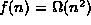
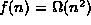
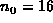
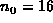

Data Structures and Algorithms
with Object-Oriented Design Patterns in Java
Data Structures and Algorithms
with Object-Oriented Design Patterns in Java
Consider the function
which is shown in Figure  .
Clearly, f(n) is non-negative for all integers
.
Clearly, f(n) is non-negative for all integers  .
We wish to show that .
According to Definition ,
in order to show this we need to find an integer
.
We wish to show that .
According to Definition ,
in order to show this we need to find an integer  and a constant c>0
such that for all integers
and a constant c>0
such that for all integers  , .
, .
As with big oh, it does not matter what the particular constants are--as long as they exist! For example, suppose we choose c=1. Then
Since for all values of  ,
we conclude that
,
we conclude that  .
.
So, we have that for c=1 and  ,
for all integers
,
for all integers  .
Hence, .
Figure clearly shows
that the function
.
Hence, .
Figure clearly shows
that the function  is less than
the function f(n)=5n-64n+256 for all values of
is less than
the function f(n)=5n-64n+256 for all values of  .
Of course, there are many other values of c and
.
Of course, there are many other values of c and  that will do.
For example, c=2 and .
that will do.
For example, c=2 and .
 Copyright © 1998 by Bruno R. Preiss, P.Eng. All rights reserved.
Copyright © 1998 by Bruno R. Preiss, P.Eng. All rights reserved.